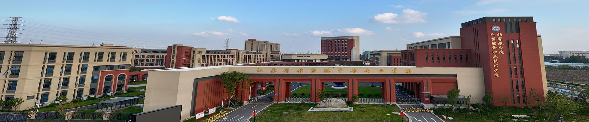
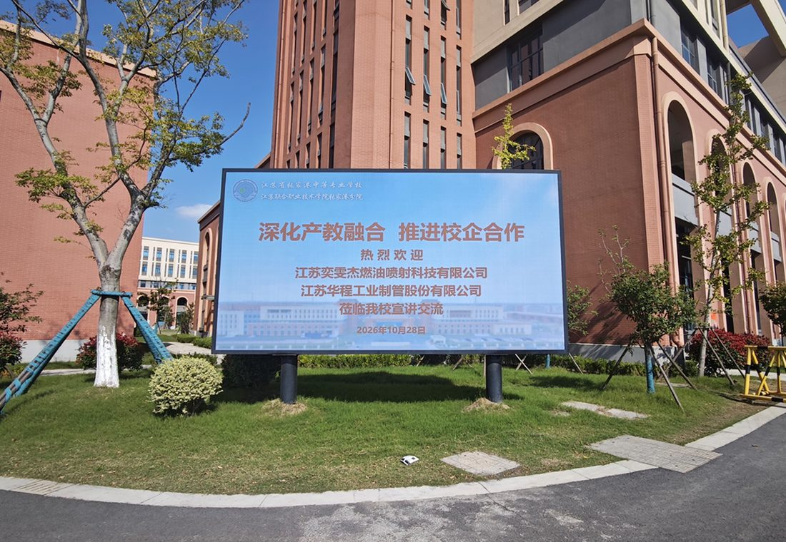
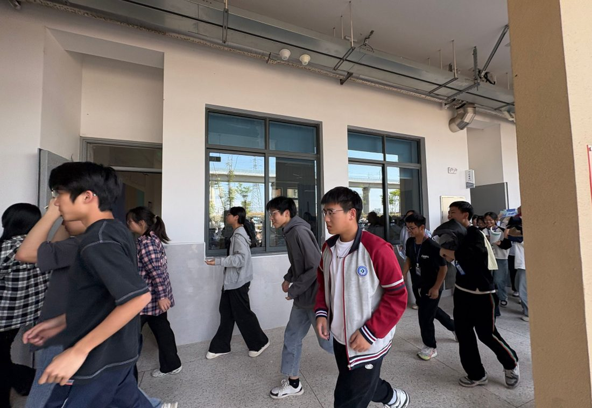
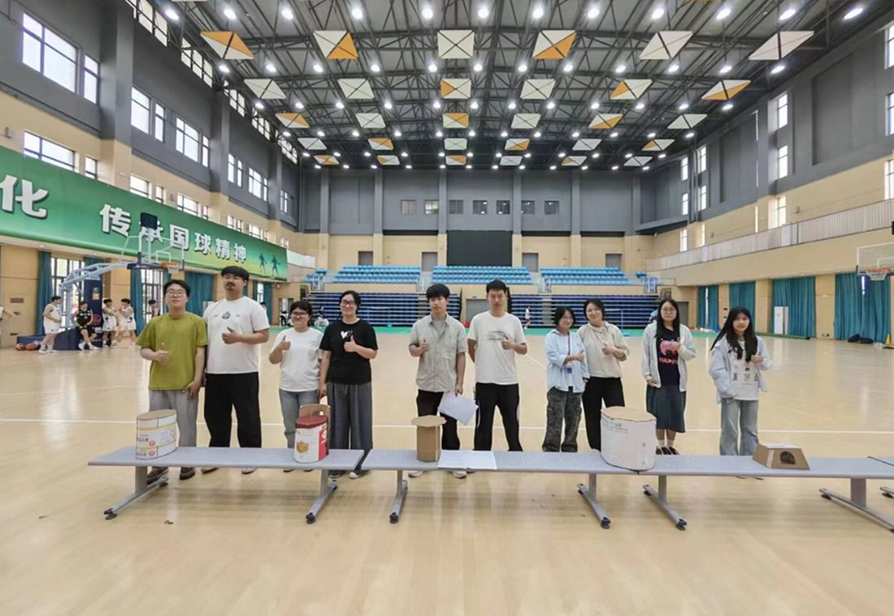
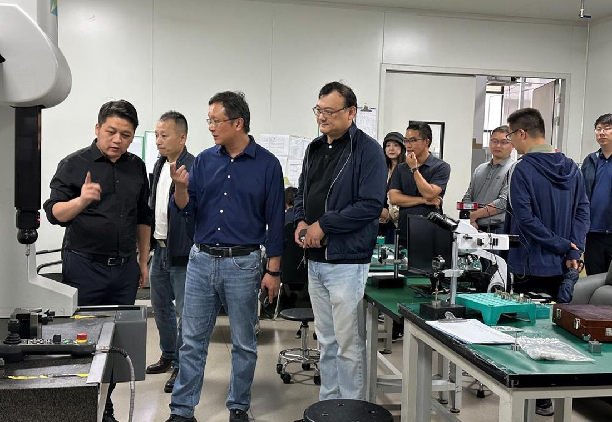
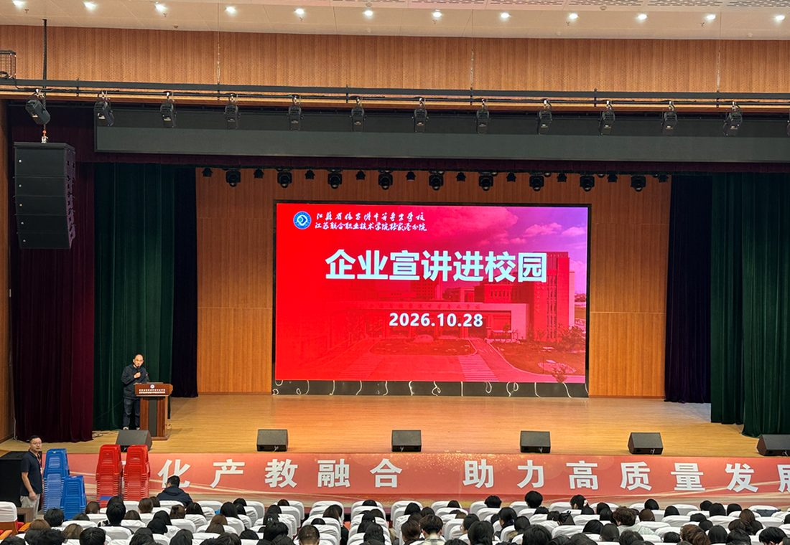
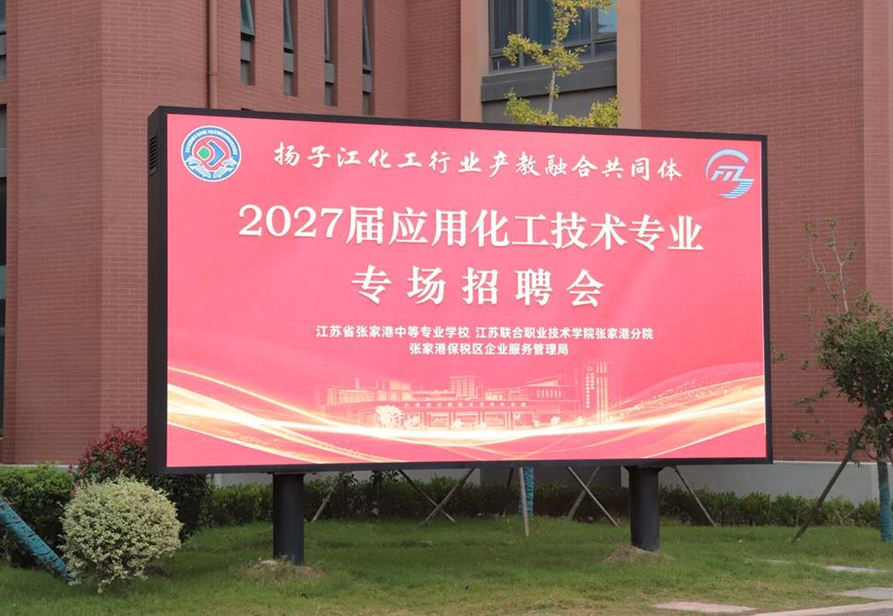

机电一体化技术
电气控制与 PLC、液压气动、设备安装与调试

五年一贯制、3+3 中高职衔接、综合高中（职教高考方向）、综合高中（技能方向）
学校创办于 1984 年，2024 年 8 月整体搬迁至张家港市福新路 2 号，占地 360 亩，建筑面积 21 万平方米。 设智能控制、机械与汽车工程、信息工程、经济贸易、能源材料五个系和职教高考部，开设 18 个五年一贯制专业， 建成省现代化专业群 3 个、省品牌专业 4 个、省优质专业 3 个。校训为“德技双馨、行胜于言”。 办学形式有五年一贯制、3+3 中高职衔接和综合高中两类，其中综合高中分职教高考方向与技能方向。
| 办学形式 | 学制 | 毕业去向 | 说明 |
|---|---|---|---|
| 五年一贯制五年制高职 | 五年 | 大专 | 18 个专业可选，在校五年，毕业发江苏联合职业技术学院全日制大专学历，第五年可参加专转本考试。 |
| 3+3 中高职衔接分段培养 | 3+3 年 | 大专 | 服装设计与工艺专业，前三年在本校就读，转段考试合格后进入常州纺织服装职业技术学院读三年，获全日制大专文凭。 |
| 综合高中职教高考方向 | 三年 | 本科 / 大专 | 设机械加工技术、电子技术应用、计算机应用、精细化工技术、市场营销五个方向，参加江苏省中职职教高考，本科达线连续 27 年全市第一。 |
| 综合高中技能方向 | 三年 | 中专 | 设机械加工技术、计算机应用、会计事务、大数据与会计、无人机操控与维护、光伏工程技术与应用六个方向，以技能培养为主，可自愿报名参加江苏省中职职教高考。 |
电气控制与 PLC、液压气动、设备安装与调试
工业机器人编程、工作站集成、离线仿真
过程控制、检测仪表、自动生产线运维
光伏与储能设备、电气控制、运维检测
机械制图、数控加工工艺、CAD/CAM
产品造型、三维建模、逆向工程
智能制造单元、设备装调、工业网络
高压系统检修、动力电池、整车诊断
车载网络、辅助驾驶、智能座舱检测
办公自动化、图形图像处理、短视频制作
网络组建、综合布线、服务器运维
虚拟化、云平台部署、容器运维
Python 程序设计、数据处理、模型训练与标注
会计核算、税费申报、财务软件应用
外贸单证、报关报检、商务英语
店铺运营、跨境物流、直播带货
化工单元操作、分析检验、安全与环保
款式设计、制版推板、成衣工艺
职教高考部不设固定专业，按语文、数学、英语加专业综合组织教学，三年后参加江苏省职教高考。
主题党日、团课与思政课；升旗仪式、主题教育实践；学生业余党校。
资助政策公示、心理健康月、敬老院志愿服务；班主任例会与家访。
技能训练周、早晚自习、专转本辅导班；学风建设与学业预警。
技能大师工作室、大赛集训队、1+X 证书考核；实训基地工作日开放。
创新创业大赛、电商直播实训、专业社团；优秀校友返校分享。





